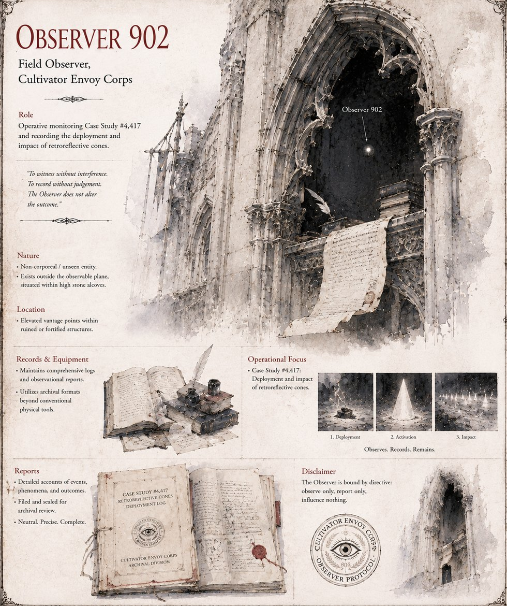

Observer 902
Field Observer, Cultivator Envoy Corps
The Cultivator field agent running Case Study #4,555, stationed unseen in an alcove cut into the Grand Basilica's own black stone. Its reports use, per protocol, no first-person pronoun and no evaluative language whatsoever — and its very first entry breaks that protocol once anyway, recording, against its own training's explicit judgment that the detail was not relevant to the case, that the drainage ditch it had just seeded smelled of a particular decayed sweetness.
It closes the file four centuries later, by Illumarian reckoning, with a report that credits the whole intervention to a single 0.2-pound retroreflective object meeting a legitimacy doctrine with zero tolerance for ambiguous results — and appends, in a margin the Corps' own style guide explicitly discourages, four words it would call purely descriptive and would not, under any circumstance the Corps could devise, call what they actually were: he wanted to leave. It is already three ditches, and one kingdom, away before the file is even closed.
“To witness without interference. To record without judgement. The Observer does not alter the outcome.”
Appears in The Vessel of Unmediated Grace